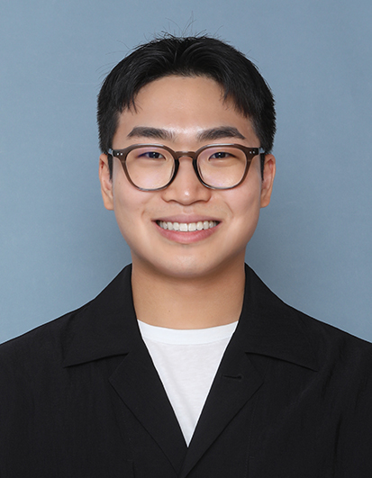
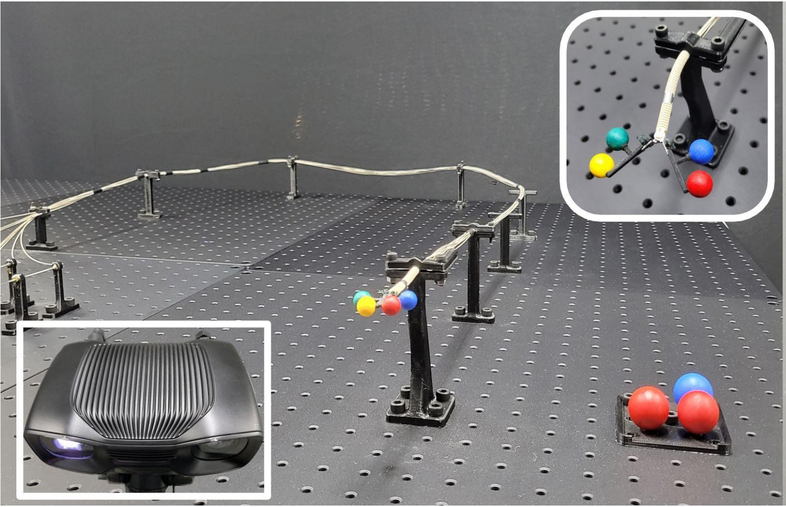

I am an AI researcher at DEEPNOID (alternative military service),
working on medical foundation models for chest X-ray, CT, and MRI — vision-language modeling,
self-supervised learning, and report generation.
I received my M.S. in Robotics & Mechatronics Engineering and B.E. in Computer Science & Electrical Engineering
(double major, summa cum laude) from DGIST, advised by
Prof. Minho Hwang.
In the summer of 2023, I interned at the Massachusetts General Hospital, Harvard Medical School, advised by
Prof. Synho Do and Prof. Kyungsu Kim.
My research aims toward fully automated surgical pipelines — AI-driven diagnosis from medical imaging,
coupled with continuum manipulators that navigate natural orifices to perform scar-free interventions.

News
Oct 2026 Received the Best Oral Presentation Award (1st place) at KoSAIM 2026 (Korean Society of Artificial Intelligence in Medicine) for Sparse-Gated Alignment in Vision–Language Pretraining Improves Zero-Shot Classification and Localization of Chest Findings on Radiographs and CT.
Sep 2026 Awarded in four tracks of MICCAI 2026 challenges: 1st place in VLM3D MRI Abnormality Classification, 2nd place in VLM3D CT Abnormality Classification, 2nd place in TREAT-MMTB TB Diagnosis, and 3rd place in TREAT-MMTB Cavity Detection and Segmentation.
Sep 2026 Our paper GLINT: Sparsely Gated Vision-Language Alignment for Fine-Grained Radiology Representations has been accepted to NeurIPS 2026.
Feb 2026 Joined DEEPNOID AI Research Lab (Multimodal Team) as a researcher, working on medical foundation models for CXR, CT, and MRI.
Dec 2025 Honored to receive the Talent Award of Korea from the Minister of Education — a national award given to 100 outstanding young talents annually.
Jun 2025 Our paper OFF-CLIP: Improving Normal Detection Confidence in Radiology CLIP with Simple Off-Diagonal Term Auto-Adjustment has been early-accepted to MICCAI (top 9%). Our paper Vibration-Assisted Hysteresis Mitigation for Achieving High Compensation Efficiency has also been accepted to IEEE/RSJ IROS.
Mar 2025 Attending IEEE ICRA 2025 to present Hysteresis Compensation of Flexible Continuum Manipulator Using RGBD Sensing and Temporal Convolutional Network. Happy to grab coffee and chat.
Jan 2025 Received the Best Researcher Award (top 1%) from the Department of Robotics & Mechatronics Engineering, DGIST.
May 2024 Our paper Hysteresis Compensation of Flexible Continuum Manipulator using RGBD Sensing and Temporal Convolutional Network has been accepted to IEEE RA-L.
Apr 2024 Our paper Integrating ChatGPT into Secure Hospital Networks: A Case Study on Improving Radiology Report Analysis has been accepted to CHIL 2024.
Publications
* denotes equal contribution.
Journal
RA-L'24

Hysteresis Compensation of Flexible Continuum Manipulator using RGBD Sensing and Temporal Convolutional Network
Junhyun Park*, Seonghyeok Jang*, Hyojae Park, Seongjun Bae, Minho Hwang